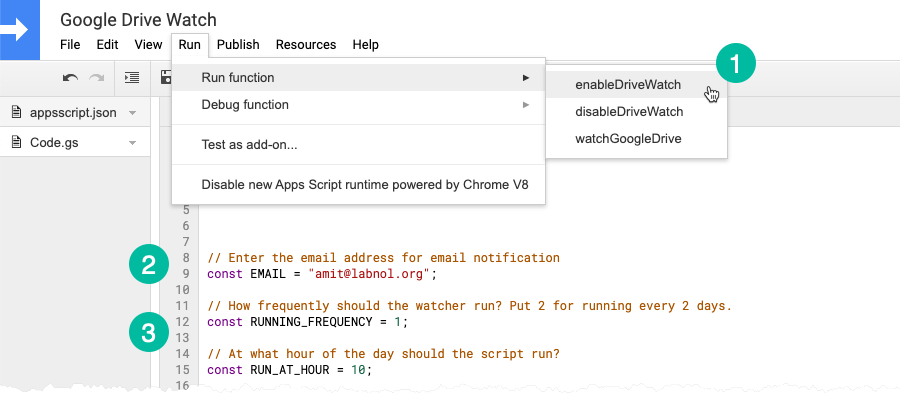

Google Drive Monitor - Get Email Alerts When Files are Deleted in your Drive
- Posted By Admin
- 25 November 2020
- Web Design - Art - Tech
Monitor your Google Drive automatically and get email alerts when important files and folders are deleted from your Google Drive. You can also watch file activity in Shared Drives.
When you delete a file in Google Drive, it moves to the trash folder and stays there indefinitely until you manually empty the bin. That is how it has always been but, sometime this month, Google made one important change to how the trash bin works..
Under the new policy, files that have been in Google Drive’s trash bin for more than 30-days are automatically deleted. This automatic cleanup does help reclaim space but if you happen to accidentally delete some important files or folders from your Google Drive, there’s no way to restore them from the trash after the 30-day window.
Monitor Google Drive Files
If you are like me who is terrified at the prospect of forever losing important files that were deleted by mistake, Google Drive Watch can help.
Google Drive Watch is an open-source Google Script that automatically monitors your Google Drive and sends daily email notifications with a detailed list of files that were deleted the previous day.
Here’s a sample email notification sent by the Google Drive Watch program.

The email includes the file link, the date when the file was first created, and the name/email address of the Google Account that last modified and deleted the file. It monitors files in your regular Google Drive as well as Shared Drive folders.
Watch your own Google Drive
Here’s how you can set up Google Drive watch for your own Google account in few easy steps:
1. Click here to make a copy of the Google script in your own Google Drive.
2. nside the script editor, go to line #9 and specify the email address where you want to receive the Drive notifications. You can also put multiple emails separated by commas.
3. The script, by default, will create a cron job that will run once per day at the selected hour. If you however wish to change the frequency so that the notifications arrive, say, every 5 days, you can specify 5 in line #10.
We are almost there. Go to the Run menu and choose “Enable Drive Watch” to enable the monitor for your Drive. Allow the script to access your file and you are all set.

Important: The first email notification will only arrive the next day at the selected hour.
How Google Drive Monitoring Works
The source code of the Google Drive monitor script is available on Github
Internally, the script uses the Google Drive API with Google Apps Script to watch for changes in your Google Drive. It then sets up a daily cron job, using triggers in Google Scripts, that sends the email if new file changes are found.
When you first run the script, it gets a starting page token and all changes made to Google Drive after this token is fetched will be monitored by the script. We set supportsAllDrives to true since the script should monitor folders in Team Drives as well.
function getPageToken() { const store = PropertiesService.getScriptProperties(); const token = store.getProperty('token'); if (token) return token; const { startPageToken } = Drive.Changes.getStartPageToken({ supportsAllDrives: true, }); store.setProperty('token', startPageToken); return startPageToken; }
The change.list endpoint of the Google Drive API fetches all changes made to the authorized user’s Drive since the start page token. We also set the fields property to limit file properties that are available in the response. The newStartPageToken returned in the response will become the new page token for future calls to the Drive API.
const fields = `newStartPageToken, items(file(id,title,labels(trashed), iconLink,mimeType,createdDate,ownedByMe, lastModifyingUser(emailAddress,displayName,picture(url)), alternateLink, fileSize))`; const { newStartPageToken, items = [] } = Drive.Changes.list({ fields, pageToken: getPageToken(), includeItemsFromAllDrives: true, pageSize: 100, supportsAllDrives: true, }); if (newStartPageToken) { propertyStore.setProperty('token', newStartPageToken); }
The items array holds a list of files that have been modified since the last run. This also includes new files that have added and old files that were edited by the users. Since we are only interested in the file that have been trashed, we’ll filter all files from the response except the ones that have been trashed.
const filteredItems = items .map(({ file }) => file) // Only interested in files where "I" am the owner .filter(({ ownedByMe }) => ownedByMe) // Only interested in files that have been "trashed" .filter(({ labels: { trashed } = {} }) => trashed === true) // Only return fields that are sent by email .map((file) => { const { iconLink, alternateLink, title, lastModifyingUser = {}, createdDate, fileSize, } = file; return { iconLink, alternateLink, title, createdDate, fileSize }; });
Now that we have an array of files that have been deleted by the user since the last run, we can use the Gmail service to notify the user.